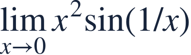
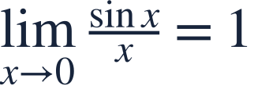
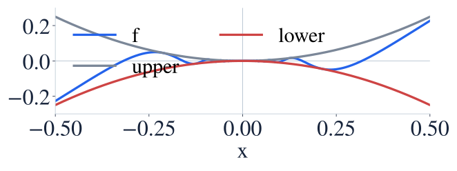
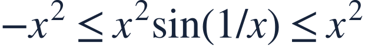
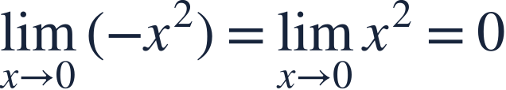
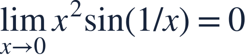

Trigonometric limits and squeezing
삼각극한과 조임정리

Oscillation can still have a limit when its size shrinks.
진동하더라도 폭이 줄어들면 극한이 존재할 수 있습니다.

Oscillation can still have a limit when its size shrinks.
진동하더라도 폭이 줄어들면 극한이 존재할 수 있습니다.

Use radians. Sine stays between −1 and 1.
각도는 라디안입니다. 사인값은 −1과 1 사이에 있습니다.

The oscillating curve is trapped between two bounds approaching zero.
진동하는 곡선이 모두 0으로 가는 두 경계 사이에 갇힙니다.

Multiplying by nonnegative x² preserves both inequality directions.
음이 아닌 x²을 곱하므로 부등호 방향이 유지됩니다.

Both bounding curves approach the same value.
양쪽 경계 곡선이 같은 값에 가까워집니다.

The squeeze theorem forces the trapped function toward zero.
조임정리에 따라 가운데 함수도 0으로 갑니다.
An oscillating factor alone does not determine the product limit.
한 인수가 진동한다는 사실만으로 곱의 극한을 판단하지 마세요.

Use the standard sine limit with its input matched.
기본 사인 극한의 입력을 맞춰 사용하세요.